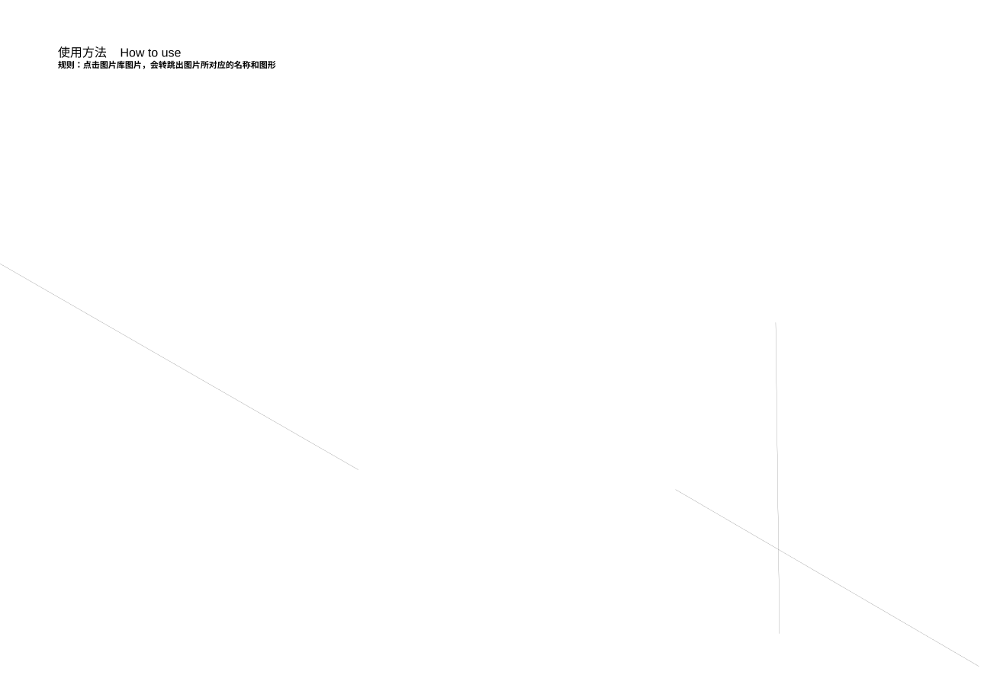
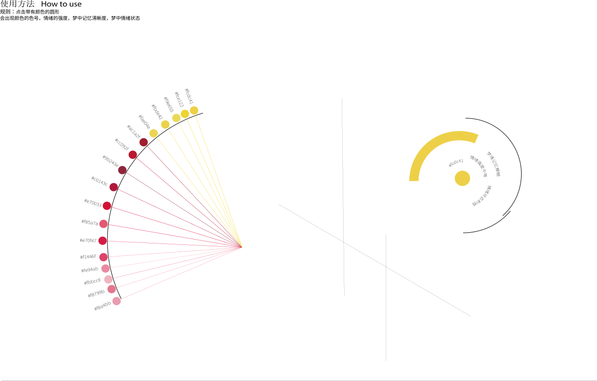
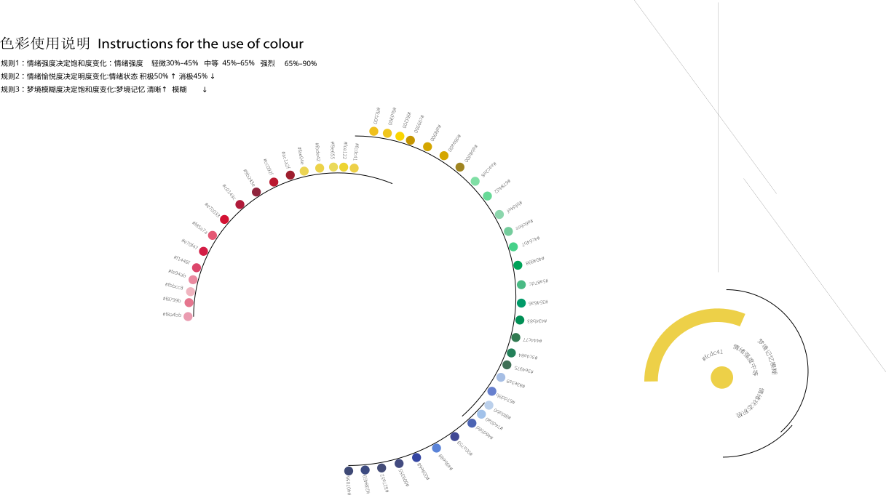
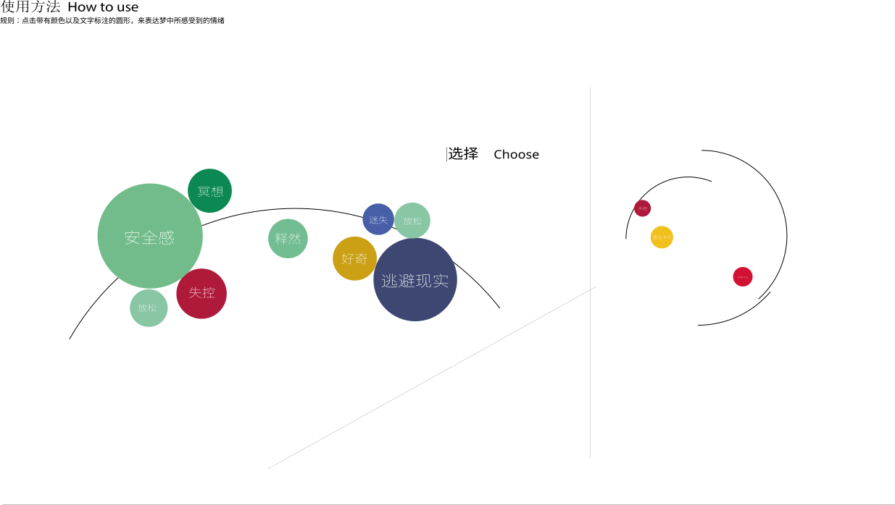
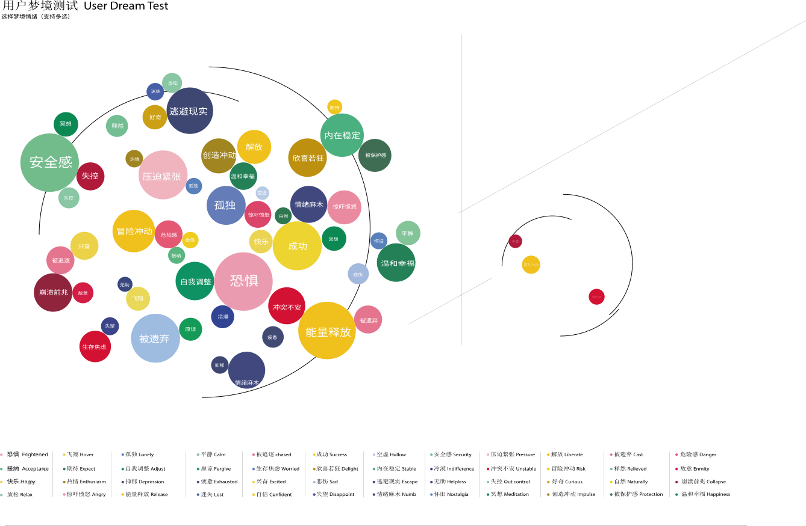
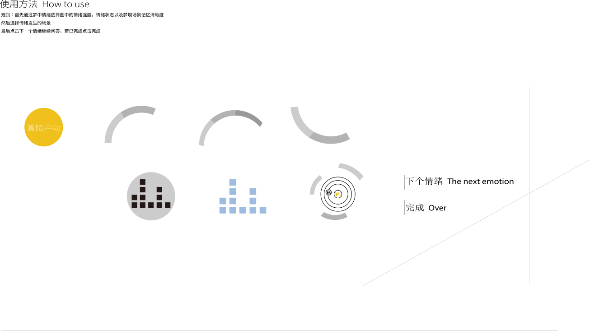
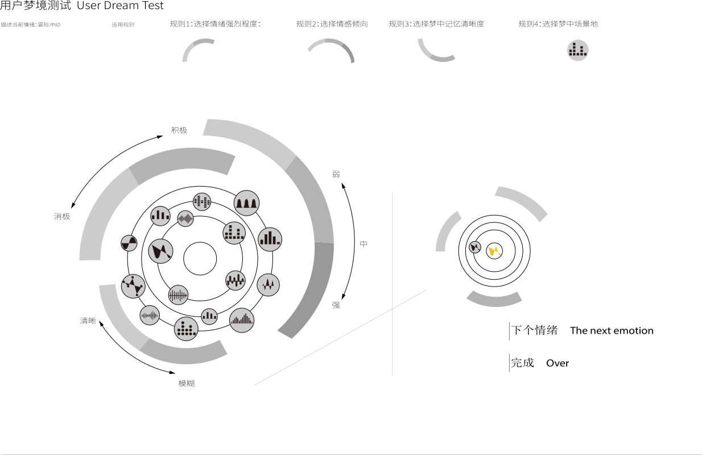

梦境
用户梦境测试User Dream Test
图形使用说明Instructions for the use of graphics
色彩使用说明Instructions for the use of colour
TD情绪动态交互TD emotional dynamic interaction

使用方法 How to use
点击图片库图片，会显示图片对应的名称和图形。

使用方法 How to use
点击颜色罗盘，查看颜色、强度、记忆清晰度与情绪状态。

图形使用说明 Instructions for the use of graphics

色彩使用说明 Instructions for the use of colour
情绪强度、情绪倾向和梦境清晰度共同决定颜色变化。

使用方法 How to use
点击带有颜色与文字标注的图形，表达梦中感受到的情绪。
选择 Choose

用户梦境测试 User Dream Test
选择梦境情绪，支持多选。

使用方法 How to use
先选择情绪，再选择情绪强度、情绪倾向、记忆清晰度和发生地点。

用户梦境测试 User Dream Test
描述当前情绪：冒险冲动
运用规则
规则1：选择情绪强烈程度
规则2：选择情感倾向
规则3：选择梦中记忆清晰度
规则4：选择梦中场景地点
梦境解读
DeepSeek Interpretation
完成情绪与地点选择后，这里会生成一段梦境解读。